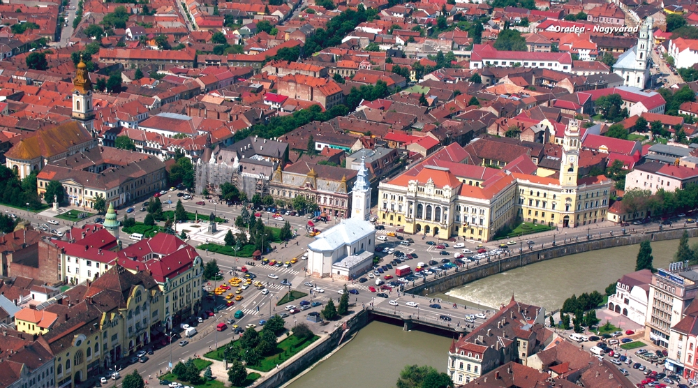

-2-MasterItem.svg)
Osaka — and they could see the sight of Expo ‘70 from their window.
Here, from 1970 to 1975, Bob worked with a a Japanese Senior minister. Because
the new towns had a
policy of “no church buildings” Bob organized the third “house church” — the congregation meeting
in a rented hall. Because the building was used for other purposes during the
week, Bob’s car trunk
became the storage area for the pulpit, the church library and tapes with the
hymns and speakers to
play them through. Each Sunday’s worship was preceded by a rapid few moments of furniture
moving!
At Christmas, 1975, Bob was called to St. Andrews-Wesley in Vancouver* as an
assistant minister
responsible for Outreach and Christian Education. During his one year furlough
from Japan, he had
worked there while taking training in
high-rise apartment ministry.
And now the Thompsons have come
to the Prairies with their three
children; Jillian-11, Amanda-5, and
Joshua who arrived on July 19th
adding a further challenge to the
already horrendous task of moving
from Vancouver to Winnipeg.
The official induction of the Rev.
Robert Thompson as our minister will
take place in our Church on Sunday,
October 14 at 7:30 PM with members
of Presbytery officiating.
*More recently St Andrews-Wesley has been the home church of Rev. Gary Paterson,
United Church Moderator.
During Bob’s stay at Westminster he participated with lay people to develop Celebration
Worship using contemporary and traditional music and various forms of Liturgy
for more
Rev. Robert Thompson and Lorraine Thompson
